IBL Neuropixels · IBL mesoscope · Allen Neuropixels · v10, 2 Nov 2026
Default mode network analogues and correlates of stillness in IBL and Allen Institute data
International Brain Laboratory, Michael Schartner, Claude Opus 5.5
One set of tests, for the neural correlates of awake stillness and for a default mode network analogue, applied to IBL Neuropixels, IBL mesoscope and Allen Institute Neuropixels recordings.
Abstract
In rodents, the default mode network (DMN) is defined by resting-state fMRI. It is unclear whether its regions behave as a network in spiking activity, and what neural activity accompanies awake rest. We applied one set of tests to four kinds of mouse recording:
IBL Neuropixels, the Brain-Wide Map (130 mice);
the IBL mesoscope (9 mice);
Allen Institute Neuropixels (Visual Behavior, Visual Coding and OpenScope; 41 mice);
Allen imaging data, which have not yet been analysed.
Robust stillness signature. The most robust correlates of awake stillness are not regional, and they hold in every dataset tested.
Activity is lower in stillness than during spontaneous movement in nearly every mouse: 129 of 130 (IBL Neuropixels), 34 of 34 (Allen) and 8 of 9 (IBL mesoscope).
A minority of neurons fires more in stillness, well above a circular-shift null: 13.6% in IBL and 11.0% in Allen.
Firing rises before movement, and rises more after longer stillness. Requiring ≥3 s instead of ≥1 s of prior stillness adds about 5 percentage points in both labs.
The size of the effect depends on the lab: in Allen mice it is a third of IBL's and absent from visual cortex after the Visual Behavior task. Matching movement definitions explains less than half of this gap.
Weak DMN evidence.
The conservative DMN core (ACA, PL, ORBm, RSP) is less recruited by movement and the task than other cortex, but it is never deactivated.
In stillness the core behaves like other cortex.
The first single-neuron test of the DMN's defining frontal–retrosplenial link (Allen OpenScope, passive viewing, 7 mice) finds frontal core–RSP pairs only at the 60th percentile of cross-probe region pairs, and not more coupled in stillness.
Introduction
In human imaging, the default mode network (DMN) is a set of regions whose activity drops during externally directed tasks compared with passive rest (Shulman et al. 1997; Raichle et al. 2001). Rodent studies define a DMN by resting-state fMRI, mostly in anaesthetised or sedated animals. The regions they agree on are anterior cingulate, prelimbic and orbital cortex together with retrosplenial cortex (Lu et al. 2012; Grandjean et al. 2020; Whitesell et al. 2021; Mandino et al. 2022). Two properties can be tested with neural recordings in awake mice:
rest preference: higher activity at rest than during a task;
co-fluctuation at rest: above all, frontal core with RSP, the link at the centre of every map.
In awake mice, "rest" is confounded by movement. Spontaneous and uninstructed movements drive much of the activity across cortex and the brain (Stringer et al. 2019; Musall et al. 2019), and quiet wakefulness synchronises cortex (Poulet and Petersen 2008). A rest test is therefore a test of behaviourally defined, awake stillness. What changes in the brain when an awake mouse is still is a question in its own right, whether or not the DMN regions stand out.
We used large public datasets that contain a passive period with no task:
the grey screen after the task in the IBL Brain-Wide Map (International Brain Laboratory et al. 2023);
the same protocol in IBL mesoscope imaging of dorsal cortex;
grey-screen and passive-viewing recordings of the Allen Institute (Siegle et al. 2021).
Each dataset is reported in its own part with every test it allows, and the results are then compared across datasets.
Results
Part IQuestion, datasets and tests
Which regions count as DMN, which datasets can test them, and which tests each dataset allows.
1. Which regions count as DMN
The rodent DMN has no single agreed region list. Four studies give explicit maps; all define the network from resting-state fMRI in anaesthetised or sedated animals, not from neural recordings.
Lu et al. 2012 (PNAS 109:3979), rat. BOLD rsfMRI at 9.4 T in 16 rats under dexmedetomidine plus low-dose isoflurane. The network comes from group ICA (30 components) with dual regression; modularity analysis of 13 regions of interest splits it into a prefrontal-temporal and a parietal module, with prefrontal cortex and RSP as hubs. Rat areas are mapped here to mouse areas.
Grandjean et al. 2020 (NeuroImage 205:116278), mouse. 17 rsfMRI datasets from different centres (255 scans; 4.7–11.7 T; various anaesthesia or awake) through one pipeline, labelled in the Allen CCFv3.
An anterior cingulate seed shows prefrontal cortex, RSP, dorsal striatum, dorsal thalamus and peri-hippocampal areas.
Group ICA gives DMN components named prefrontal, cingulate/RSP and temporal association areas. The prefrontal subregions are not specified.
Whitesell et al. 2021 (Neuron 109:545), mouse. BOLD rsfMRI at 7 T in 40 mice under light halothane sedation. Group ICA (5 components) gives the DMN component, which is registered to the Allen CCFv3. A cortical region counts when more than 50% of its voxels lie in the core mask. Anterograde viral tracing shows that these regions are preferentially interconnected.
Mandino et al. 2022 (Mol. Psychiatry 27:2110), mouse. rsfMRI co-activation patterns, and viral-tracer projection similarity to an anterior cingulate seed, define the DMN within a triple-network model. Its cortical part is labelled ACA and RSP ("anterior and posterior cingulate"), with an unlabelled medial visual extension.
Figure 1 shows how the four maps overlap at the Allen (Beryl) level.
All four: ACAd, ACAv, RSPagl, RSPd and RSPv.
Three (Lu, Whitesell and Grandjean's prefrontal component): PL and ORB. Mandino et al. name only cingulate regions.
Two at most: ILA, VISa, VISam and TEa.
One paper only: SSp-tr, SSp-ll and MOs (Whitesell), and auditory cortex, VISrl, VISpm and CA1 (Lu).
None: ECT and PERI, which earlier versions of this report included as a "lateral" DMN.
The analyses below therefore use a conservative core: ACA and RSP, which all four maps include, plus PL and ORBm. ORBl and ORBvl have the same literature support as ORBm, and their effect on the results is noted where relevant.
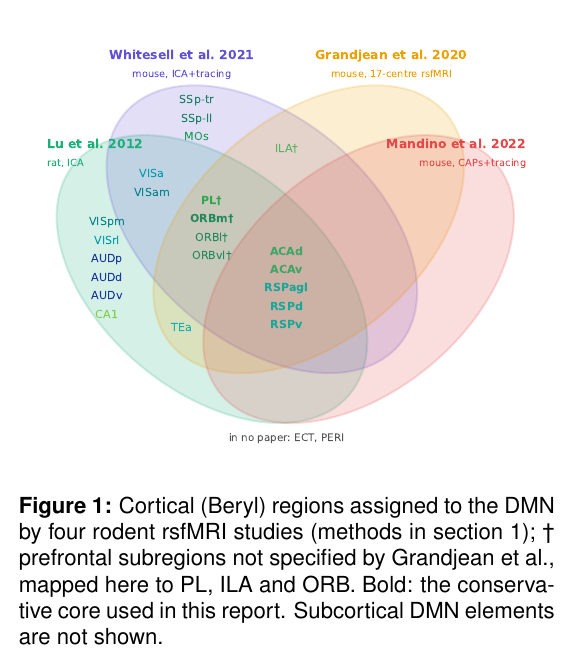
2. Four datasets, one set of tests
The goal is the same for every dataset: find the correlates of awake stillness, and look for evidence of a DMN analogue. The datasets differ in what they record, which rest period they offer and how movement is measured, so each is reported in its own part. Every test is applied wherever the recording allows it.
Dataset
Recording
Rest period
Movement measured by
DMN core covered
Mice analysed
IBL Neuropixels (BWM, Part II)
spikes; 1–2 probes per session, whole brain
10 min grey screen after the task (5 min in 55 sessions)
wheel, licks, face motion energy; pupil
all seven regions, but never frontal core and RSP in one session
130
IBL mesoscope (Part III)
two-photon calcium, dorsal cortex; deconvolved, 1 s bins
60 s grey screen in most sessions; grey screen plus receptive-field mapping (median 6 min) for stillness
face motion energy, licks (wheel not recorded in the passive block); pupil
RSPagl and RSPd; frontal core not imaged
5 (coupling), 9 (stillness)
Allen Neuropixels: Visual Behavior and Visual Coding (Part IV)
spikes; up to 6 probes in visual cortex, thalamus, hippocampus and midbrain
about 5 min grey screen after a change-detection task (VBN) or within passive viewing (VC)
running speed; pupil (VBN)
3 RSPd units in 1 mouse
34
Allen Neuropixels: OpenScope (Part IV)
spikes; probes in frontal and posterior cortex
none: passive viewing of stimuli
running speed
frontal core and RSP on separate probes
7
Allen mesoscope and two-photon (Part V)
calcium, mainly visual cortex
not analysed
Which test runs on which dataset. "Not run" means the data would allow the test but it has not been done. "n/a" means the data cannot support it.
Test
IBL Neuropixels
IBL mesoscope
Allen Neuropixels
Allen imaging
DMN: rest preference against the task
sections 5–6
not run
n/a (no core units in VBN/VC; no task in OpenScope)
not analysed
DMN: single-region resting metrics
section 9
not run
n/a (no core units)
not analysed
DMN: co-fluctuation of core regions
sections 7–8 (no frontal–RSP pair)
section 11 (RSP only)
section 14 (frontal–RSP, passive viewing)
not analysed
Stillness: rate ratio, still against moving
section 10.2
section 12
section 13
not analysed
Stillness: still- and movement-preferring cells, circular-shift null
sections 10.2, 13.4
section 12
section 13.4
not analysed
Stillness: reproducibility within recordings
section 10.3
not run
not run
not analysed
Stillness: time course and pre-movement rise
sections 10.4, 13.4
n/a (1 s calcium bins)
sections 13.2, 13.4
not analysed
Stillness: population synchrony
section 10.5
not run
n/a (still periods too short)
not analysed
Stillness: pupil within stillness
section 10.6
not run
not run
not analysed
DMN core against other cortex in stillness
section 10.6
section 12 (RSP, 2 mice)
n/a (no core units in VBN/VC)
not analysed
Shared methods. All stillness contrasts compare interleaved still and moving samples from one passive period, so slow drift and task context cannot separate them. Per-neuron (or per-ROI) tests use spaced samples and are checked against a circular-shift null. Statistics are made at the mouse level: neurons are averaged per session, sessions per mouse, and CIs are bootstraps over mice. Movement definitions differ with what each rig records. The IBL Neuropixels data were therefore also re-analysed with the Allen definition (section 13).
Part IIIBL Neuropixels (Brain-Wide Map)
Spike-sorted units from 426 BWM sessions of 138 mice (2023 release), recorded with one or two probes per session across the whole brain. 396 sessions (130 mice) have the passive grey-screen block, which serves as the rest condition for the DMN tests (sections 5–9) and for the stillness analysis (section 10). Movement is measured by the wheel, licks and face motion energy, arousal by pupil diameter.
3. What the grey-screen period is
The passive protocol (iblrig passiveChoiceWorld, version 7 for the BWM) runs after the task, with the mouse still head-fixed at the rig. The experimenter turns the water valve off first. Its Bonsai workflow clears the screen to Gray, keeps the sync square off and runs only a timer (10 min by default; 5 min in the passiveChoiceWorldIndependent variant). Frame2ttl spacer patterns before and after the block let ibllib extract it into _ibl_passivePeriods.intervalsTable. Receptive-field mapping (about 5 min) and the replay of task stimuli, valve clicks and tones follow.
Coverage: 396 of 426 extracted BWM sessions (130 mice) have the interval; the other 30 have no passive data.
When: always after the task, a median 1.1 min after the last trial (5–95%: 0.6–3.9 min).
How long: 600 s in 341 sessions and 300 s in 55 (Figure 2). The first second is skipped in all analyses.
Example session (Figure 2f–g): CSH_ZAD_019 has 55 neurons in RSPagl, RSPd and RSPv and median stillness. Panel f zooms into 10 s at 50 ms resolution, showing the alternation of brief movements and still bouts alongside the activity of its 20 most active retrosplenial neurons. No session records frontal core and RSP together.
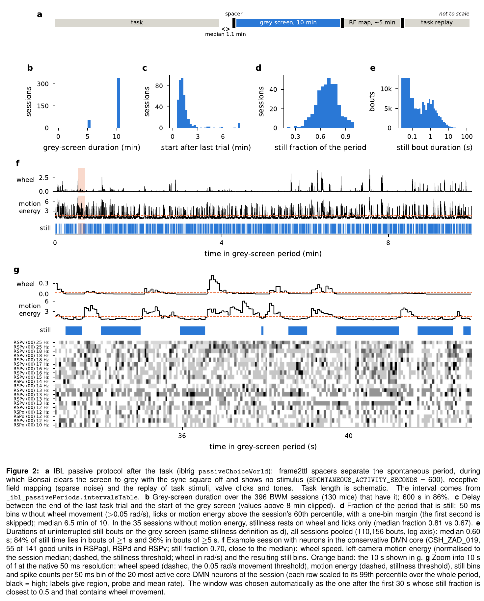
4. Is the mouse inactive?
Mostly, but not continuously. Compared with the task ITIs of the same session, the wheel and the face move far less. Pupil size is about the same, so the mice are not drowsier than during the task (Figure 3).
Per session, median (5–95%)
Grey screen
Task ITI
Fraction of 50 ms bins with wheel movement (338 sessions)
0.14 (0.03–0.30)
0.48 (0.20–0.72)
Fraction of bins with motion energy above the session's 60th percentile (361)
0.23 (0.08–0.38)
0.44 (0.27–0.65)
Motion energy, grey / ITI
0.51 (0.23–1.14)
Pupil diameter, grey / ITI
1.02 (0.76–1.25)
Still fraction of the period
0.69 (0.47–0.89)
Still time
392 s (203–513)
Median length of a still bout
0.85 s (0.25–2.45)
Fully still 1 s bins
212 (46–417)
Missing behaviour data: motion energy is missing for 35 sessions and the wheel for 58. Without motion energy, stillness rests on wheel and licks only and is more lenient (still fraction 0.81 vs 0.67). Section 5 repeats the main test without these sessions.
Licks: 107 sessions show more than 10 detected licks per minute on the grey screen, with no reward available. Part of this is probably lick-detection noise; lick bins are excluded either way.
Most face and paw movements happen without wheel turns. In a session examined in detail (ZFM-01577), only 40% of the bins with high motion energy have any wheel movement. The rest are brief snout, head and paw movements (median 0.15 s, about one per second), confirmed by the nose and paw keypoints and by the right camera (motion energy correlated with the left camera at 0.93). The stillness criterion removes these too, not just wheel turns.
Still bouts are short (Figure 2e). Pooled over all sessions there are 110,156 uninterrupted still bouts on the grey screen, median 0.6 s. Their durations are bimodal: many 50–100 ms gaps between movements, and a second mode around 1 s. 84% of still time lies in bouts of at least 1 s, but only 36% in bouts of at least 5 s.
Stillness is stable over time: the still fraction stays near 0.68 from the first to the last minute (Figure 3d).
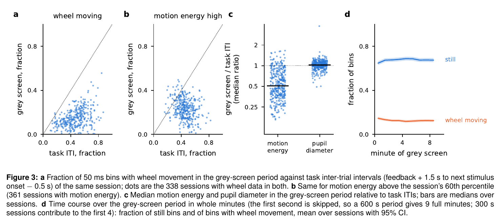
5. Rest preference measured against the grey screen
Each neuron's activity during the task is compared with still 0.3 s chunks of the grey-screen period. Task activity is the per-trial mean of the movement-onset, movement and feedback windows. The conservative core is somewhat more suppressed than the rest of cortex, but the difference is modest and not robust to every comparison (Figure 4).
Region set vs other cortex
Suppressed, set / other
p (regions)
Mouse CI (% points)
Rest index p
Last third of trials, p
Conservative core (7 regions)
42.0 / 34.6%
0.069
[1.6, 13.2]
0.21
0.032
… vs higher-order cortex only
42.0 / 37.2%
0.21
[−1.1, 11.0]
0.54
0.079
… sessions with motion energy only (361)
42.5 / 34.6%
0.055
[0.5, 14.0]
0.20
0.037
Suppressed: p < 0.01 in a Welch test of rest chunks (one per 3 s) against task trials, with rest above task; the fraction is averaged over regions. There are 53,213 neurons from 395 sessions and 130 mice. p values come from 20,000 region permutations; CIs come from a bootstrap over mice.
Core region
Suppressed vs grey
Rank (of 43 cortical regions)
RI
Neurons (mice)
ORBm
49%
4
0.12
138 (5)
RSPv
49%
5
0.06
413 (20)
RSPagl
44%
7
−0.02
171 (15)
RSPd
42%
13
0.00
294 (21)
PL
40%
15
0.02
166 (12)
ACAv
36%
25
0.02
90 (8)
ACAd
34%
28
−0.11
249 (15)
Cortex median: 37% suppressed, RI −0.03. The most suppressed regions overall are ILA (56%), ECT (52%) and PERI (50%), which are not in the core.
Most neurons differ: 81% of all neurons differ significantly between grey screen and task (suppressed or enhanced), so the suppressed fraction is close to the sign of RI.
Drift: task-window rates rise from the first to the last third of trials (median drift index +0.24 across cortical regions), but the drift is not specific to the core (p = 0.53). Against only the last third of trials, closest in time to the grey screen, the core is p = 0.03.
Agreement with the ITI reference: the region ordering agrees with the earlier ITI-based analysis (Spearman ρ = 0.44 across 43 regions).
Per core region (Figure 4a–b, mouse-level CIs): only ORBm is clearly above the other-cortex level; ACAd and PL are at it, and the rest have wide CIs that overlap it.
Wider literature sets: the full Whitesell set gives a similar difference, the Lu set a weaker one (Figure S1).
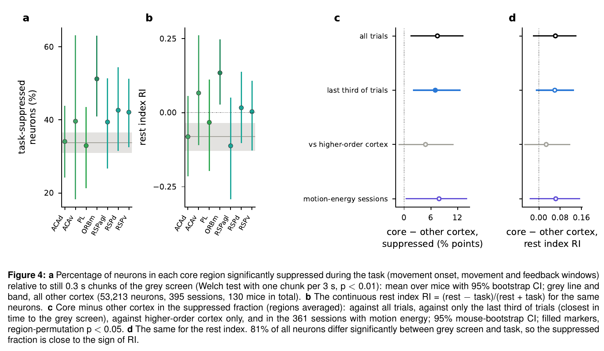
6. Firing rates across behavioural windows
What the DMN literature predicts.
Deactivation is measured against the region's own baseline. In human fMRI the DMN signature is a decrease of a region's own activity during externally directed tasks, relative to its resting baseline (task-induced deactivation; Shulman et al. 1997, Raichle et al. 2001). The test is within region; specificity means other regions do not decrease, or increase.
The analogue is the population mean rate. BOLD follows pooled population activity, so the closest spiking measure is the population mean firing rate, not the fraction of individually significant neurons.
Movement is a confound. In mice, movement raises firing across most of cortex (Stringer et al. 2019; Musall et al. 2019), and the task windows contain movement. A rest-versus-task difference can therefore reflect movement rather than DMN-like disengagement.
Two comparisons separate engagement from movement:
quiescence (waiting for the stimulus, engaged and still) against inter-trial rest (between trials, disengaged and still). A DMN region should drop during quiescence.
moving against still bins with no task at all, which measures the movement effect alone.
Two rest conditions are compared: inter-trial rest, interleaved with the task (no drift), and the grey screen, longer and later.
Window definitions. Figure 5a shows the windows on a median trial, aligned to stimulus onset. All windows were fixed before looking at DMN results. Each neuron's rate in a window is its spike count summed over all qualifying trials or bins of the session, divided by their total duration.
Window
Definition
Bins used
Duration
Why this window
Stimulus
0 to 0.15 s after stimulus onset (stimOn_times)
all (exact spike counts per trial)
0.15 s per trial
sensory response to the visual stimulus; the window of the ~/dmn PETH pipeline
Movement + feedback
mean of three windows: first movement −0.15 to 0 s and 0 to 0.15 s (firstMovement_times), and feedback 0 to 0.3 s (feedback_times, reward or error)
all (exact spike counts per trial)
0.15, 0.15 and 0.3 s per trial
the active, externally directed part of the trial; the task windows of section 5 and of the ~/dmn pipeline (BWM single-cell windows are shorter: 0.1, 0.1 and 0.2 s)
Quiescence
trial start (intervals_0) to 0.1 s before stimulus onset
still bins only
median 0.7 s per trial (IQR 0.56–1.17)
engaged waiting without movement: the mouse must hold the wheel still for the stimulus to appear. The last 0.1 s is cut to exclude anticipation and the earliest visual responses
ITI rest
trial end (intervals_1) to the next trial start (intervals_0)
still bins only
median 0.67 s per trial
disengaged rest between trials, interleaved with the task so slow drift cannot separate it from the task windows. Feedback to trial end (1.57 s; reward consumption and licking, or the error tone) is left out
ITI moving
the same inter-trial gaps
moving bins only
median 0.67 s per trial, moving part
movement without the task, interleaved with it
Grey still
passive grey screen (_ibl_passivePeriods, spontaneousActivity), first second skipped
still bins only
median 392 s per session
long passive rest after the task, the closest to a resting-state scan
Grey moving
the same grey-screen period
moving bins only
the remaining ~3 min per session
movement with no task at all
Still bin: a 50 ms bin with wheel speed ≤0.05 rad/s, no detected lick, and left-camera motion energy at or below the session's 60th percentile. One bin on either side of any movement is also excluded. Moving bin: any of these criteria violated, without the margin.
Trials: BWM trial criteria apply to all trial-based windows.
Inclusion: a window enters a session's estimate only with at least 2 s of bins in total. Neurons need an overall rate of at least 0.5 Hz.
Known weak points:
In the quarter of trials with reaction times under 0.13 s, the stimulus window already contains movement onset.
Task windows (0.15–0.3 s around events) weigh transient responses more than the seconds-long rest windows.
The motion-energy threshold is relative within each session.
Quiescence includes recovery after wheel movements that restart it.
The inter-trial gap starts right after trial end.
A sensitivity analysis over these choices has not been run yet.
Data: 58,417 neurons ≥0.5 Hz, 426 sessions, 138 mice; the core has 1,951 neurons from 49 mice.
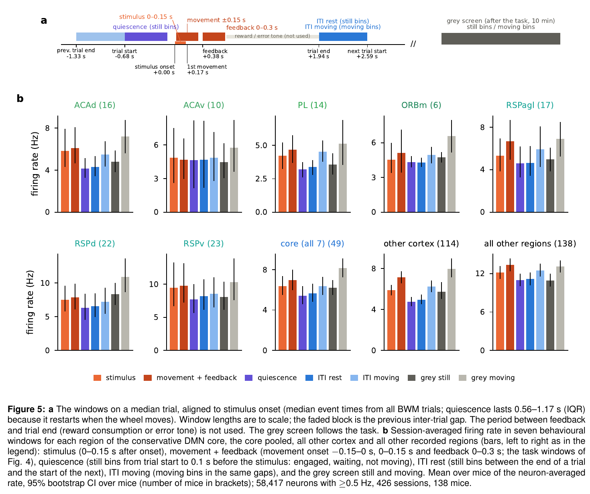
Results (Figure 6). Values are log2 rate ratios, mean over mice with 95% CI. "Within session" compares core neurons with non-core neurons recorded at the same time.
Contrast
Core
Other cortex
All other regions
Core − other cortex, within session
Core − all other, within session
Movement + feedback / ITI rest
+0.25 [0.09, 0.40]
+0.48
+0.43
−0.11 [−0.35, 0.12], p = 0.35
−0.16 [−0.35, 0.04], p = 0.14
Stimulus / ITI rest
+0.13 [0.04, 0.22]
+0.23
+0.23
+0.03, p = 0.57
−0.09, p = 0.13
Quiescence / ITI rest (engaged, still)
−0.09 [−0.15, −0.03]
−0.07
−0.01
+0.01 [−0.06, 0.07], p = 0.82
−0.07 [−0.13, −0.01], p = 0.02
Grey still / ITI rest
+0.01 [−0.21, 0.24]
−0.02
−0.28
−0.01, p = 0.85
+0.25, p = 0.04
ITI moving / ITI still
+0.18 [0.04, 0.32]
+0.34
+0.34
−0.05, p = 0.52
−0.16, p = 0.07
Grey moving / grey still
+0.31 [0.23, 0.41]
+0.42
+0.43
+0.02, p = 0.98
−0.09, p = 0.21
No task-induced deactivation. The core fires 19% more during movement and feedback than in still inter-trial rest, and 10% more after stimulus onset. Every core region is at or above its rest rate in the task windows.
The core increases less than other cortex (39%). That difference is significant over mice (−0.23, CI −0.40 to −0.05), but not over regions (p = 0.18) or within sessions (p = 0.35).
Engagement without movement lowers firing, but not specifically in the core. While waiting still for the stimulus, core neurons fire 6% less than when still between trials. This is the direction the DMN literature predicts.
Other cortex drops by 5%, so the core does not differ from it (within session p = 0.82).
It differs only from the brain-wide average, which barely changes (p = 0.02): a cortical, not a DMN-specific, effect.
Movement raises firing in the core too, by 13–24%, somewhat less than elsewhere. The core's weaker task increase fits its weaker movement modulation.
Grey-screen and inter-trial rest give similar core rates. The grey screen does not reveal a higher "deep rest" level in the core.
Suppressed neurons: with inter-trial rest or quiescence as the reference, the core has more neurons that fire less during the task than at rest (28% vs 22% in other cortex for inter-trial rest, region-permutation p = 0.02; 27% vs 21% for quiescence, p = 0.03).
Within session the difference is not significant (p = 0.14 and 0.06). Individual suppressed neurons exist in every region, and the population mean of the core still rises during the task.
Trial-by-trial co-fluctuation in inter-trial rest and quiescence (Figure 6d): core–core pairs are more coupled than core–other pairs (+0.10, CI 0.04–0.17, 26 mice).
This comes from same-probe neighbours less than 0.5 mm apart, mainly RSPd–RSPv and RSPagl–RSPd, which are subdivisions of one area.
The 4 cross-probe core pairs are below average, and distance-matched within session the excess is +0.06 (CI −0.02 to 0.13, 12 mice).
Interpretation. Measured as the fMRI literature defines it, against the region's own baseline in population firing, the conservative DMN core is not deactivated by the task in any window. Its apparent rest preference is relative: it is less recruited by movement and the task than the rest of cortex. The only DMN-like absolute change, lower firing during still, engaged waiting, is shared by other cortex.
Resting-state networks are defined by co-fluctuation, which needs two regions recorded at the same time. A region pair counts if a session has at least 5 neurons in each region and at least 120 fully still 1 s bins. 319 sessions (116 mice) have enough still bins and 308 of them yield region signals (Figure 7).
Core regions per session: of the 308 sessions, 267 record no core region, 21 record one, 19 two and 1 three. Most sessions record no or one cortical region at all.
Frontal core and RSP are never recorded together: frontal core (ACA, PL, ORBm) appears in 17 sessions and RSP in 24, never in the same one.
Core pairs: 7 of the 21 possible core pairs are recorded, all between neighbouring areas: ACAd–ACAv, ACAd–PL, ACAv–PL, ORBm–PL and the three RSP subdivisions.
Pairs in at least 3 mice: three (ACAd–ACAv, ACAd–PL, RSPd–RSPv). None is recorded on two probes in 3 mice.
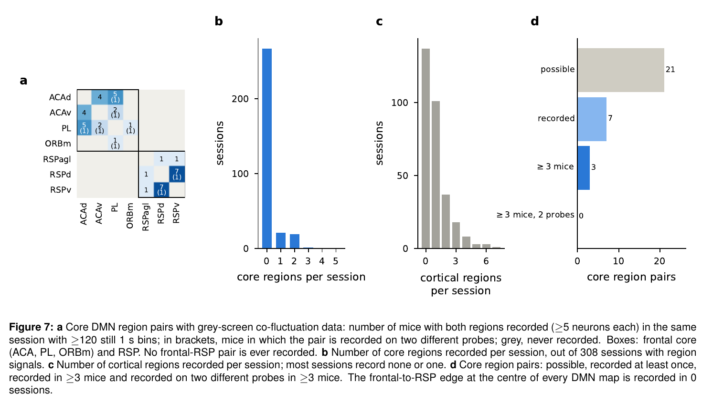
8. Do core regions co-fluctuate on the grey screen?
There is no evidence that they do. Each region signal is the mean of z-scored neurons in still 1 s bins, after regressing out wheel, licks and motion energy. Each pair correlation is compared with cortical pairs at the same distance and probe relation (Figure 8).
Pair classes: core–core pairs couple exactly as much as core–other pairs: +0.0005 z, CI −0.10 to 0.11; the same holds with 0.5 s bins.
That is 25 pairs from 20 sessions and 18 mice; the smallest detectable effect at 80% power is 0.15 z.
Only 4 core–core pairs come from two probes, too few to test.
Single core pairs recorded in ≥3 mice are all compatible with zero (ACAd–ACAv +0.03, ACAd–PL 0.00, RSPd–RSPv −0.03). The other four are recorded in only 1–2 mice.
Within session: core–core minus core–other is +0.04 (8 mice, p = 0.64).
State invariance: the same region pair in the same session couples similarly on the grey screen and in task ITIs (Spearman ρ = 0.39 over 3,516 pairs of all regions). Coupling structure is partly a fixed property of the recorded circuits.
Wider literature sets: see Figure S2.
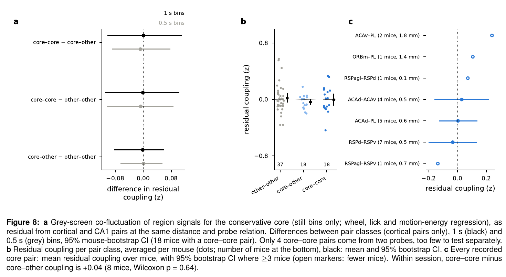
9. Single-region resting metrics
Resting-state fMRI also has measures for one region at a time. ALFF and fALFF measure how strongly and how slowly a region fluctuates at rest; ReHo measures how synchronised neighbouring voxels are. Their electrophysiological analogues need only one region per recording, so they pool across all mice (Figure 9).
fALFF is the fraction of slow (0.01–0.1 Hz) power in each neuron's 1 s rate, after regressing out wheel, licks and motion energy and adjusting for firing rate. Core regions scatter around the other-cortex level, PL highest and RSPv lowest; the core as a whole does not differ (+0.0005, p = 0.97).
Fluctuation amplitude (coefficient of variation of the 1 s rate) is largely set by firing rate (ρ = −0.79). After rate adjustment the core is slightly lower (−0.06; mouse CI excludes zero, region-permutation p = 0.14), driven by ACAv and RSPagl.
Local synchrony (mean correlation between neurons of one region in still 1 s bins) does not differ (−0.01, p = 0.57).
Independence: across cortical regions, these resting metrics are unrelated to rest preference (fALFF ρ = −0.05).
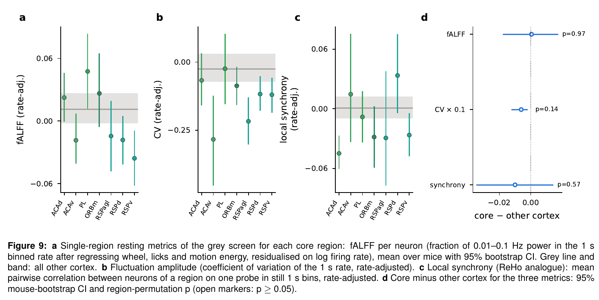
10. Beyond the DMN: neural correlates of awake stillness
Sections 5–9 find little that is specific to the DMN regions at rest. This chapter asks the broader question: during behaviourally defined, putatively awake stillness on the grey screen, what changes in neural activity anywhere in the brain, which changes hold across animals, and which are specific to brain areas? It uses the same grey-screen block and movement thresholds, and the single-cell techniques of this report that held up best: interleaved still-versus-moving contrasts within one period, per-neuron tests on spaced samples, mouse-bootstrap statistics and within-session comparisons. Data: 53,136 neurons (≥0.5 Hz) from 389 sessions and 130 mice, with a median 5.6 min of awake stillness and 2.4 min of movement per session.
10.1 Awake stillness and the sleep gate
Moving bin: wheel speed >0.05 rad/s, a lick, or motion energy above the session's 60th percentile, as in the rest of this report. Awake-still bin: not moving (±1 bin margin), at most 30 s since the last movement, and pupil at or above the 10th percentile of the session's task-period pupil.
Why a sleep gate: head-fixed mice can enter NREM sleep with their eyes open after tens of seconds of immobility, and their pupil constricts. Still bouts longer than 10 s had a median pupil of 0.91× the task median.
What it removes: a median 7% of still time (IQR 1–26%) in the 342 sessions with pupil tracking; the other 47 are gated by the 30 s limit only. The stillness index is nearly identical with or without the gate (ρ = 0.98, Figure 15c).
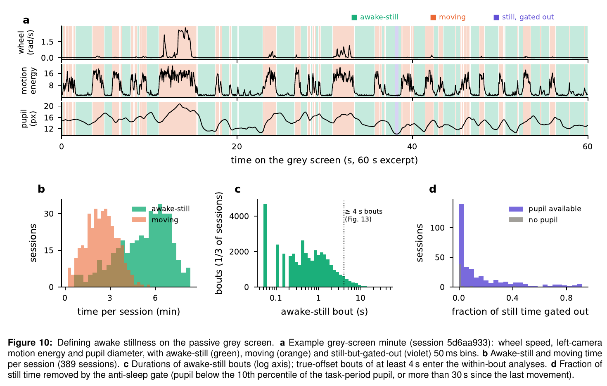
10.2 Stillness lowers firing almost everywhere
Each neuron's rate in awake-still bins is compared with its rate in moving bins of the same grey-screen period (Figure 11). Rate ratio: log2((still + 0.1)/(moving + 0.1)). Still- or movement-preferring: 0.5 s still against 0.5 s moving epochs, Welch test p < 0.01.
Division
Rate ratio (mean over mice)
Mice below 0
Still-preferring
Movement-preferring
Hindbrain
−0.73
96%
16%
39%
Thalamus
−0.54
96%
6%
52%
Midbrain
−0.44
93%
18%
39%
Cortex
−0.43
95%
13%
40%
Striatum/pallidum
−0.32
78%
18%
36%
Hippocampal formation
−0.24
82%
19%
41%
Cerebellum
−0.21
89%
23%
30%
Neurons are averaged within mouse, then over mice (mice with ≥5 neurons in the division). Still- and movement-preferring fractions are means over mice.
Brain-wide: the geometric-mean rate ratio is 26% below movement (log2 −0.43, CI −0.47 to −0.39), in 129 of 130 mice and every division. 15% of neurons are still-preferring (in 126 of 128 mice) and 40% movement-preferring.
Most suppressed: orofacial brainstem (GRN −1.52, SPVC −1.25, IRN, SPVO, V, SPVI) and somatosensory thalamus (VPLpc, VPM, PO), as expected from the face and body movements that define the moving state.
Least suppressed or enhanced: LSv (+0.26) and LSr (+0.13) fire more in stillness (equal-mouse region means); TRS (+0.04) and BST (−0.04) are near zero. Still-preferring neurons are most common in CLI (39%), LSv (38%), DCO (34%), LSr (33%), DN (32%) and IP (30%), but occur in almost every region. These regional rankings are exploratory and sensitive to mouse weighting and coverage.
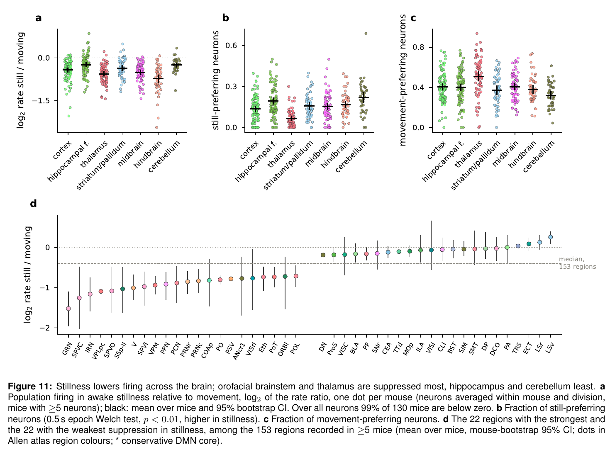
10.3 Stillness preference is reproducible within recordings
Neuron level (Figure 12a–c; stillness index SI = (still − moving)/(still + moving)): first versus second half of the grey screen ρ = 0.78; grey screen versus the task's inter-trial gaps ρ = 0.55; against face/body-only versus against wheel movements ρ = 0.74. The last comparison shares the stillness rate between indices, which can inflate it; it supports consistency across movement definitions, not effector-independent tuning. All are within-recording comparisons.
Region level (Figure 12d): region maps from two random halves of the mice agree moderately (rate ratio r = 0.46; 0.29 after subtracting each session's mean). Region within session explains 13% of neuron variance against 4% for shuffled labels; the session explains 6%. Most variation lies between neurons within a region.
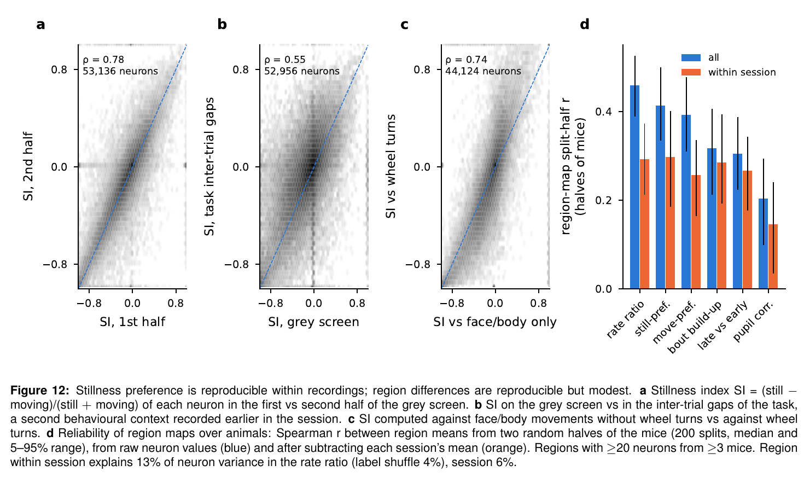
10.4 Stillness is graded in time
Entering stillness (Figure 13a): after a movement that starts a ≥4 s still bout, hippocampal firing dips about 0.3 s after offset (log2 −0.2) and cortex about 0.6 s after (−0.1); both recover within 1–2 s. Thalamus falls more slowly and stays low.
Deepening stillness (Figure 13c–f): from 0.5–1 s to 2–4 s after the last movement, cortex (+0.12, 79% of mice) and hippocampal formation (+0.11, 77%) rise, while thalamus (−0.06, 67%) and hindbrain (−0.05, 57%) fall weakly. Within long bouts a mean 12% of hippocampal neurons rise at uncorrected p < 0.01 (DG 17%); after FDR correction few within-bout classifications survive (3% rising at q < 0.05), so these are less secure than the rate contrast.
Leaving stillness (Figure 13b): in every division firing rises 0.3–0.5 s before movement onset, most steeply in thalamus and cortex.
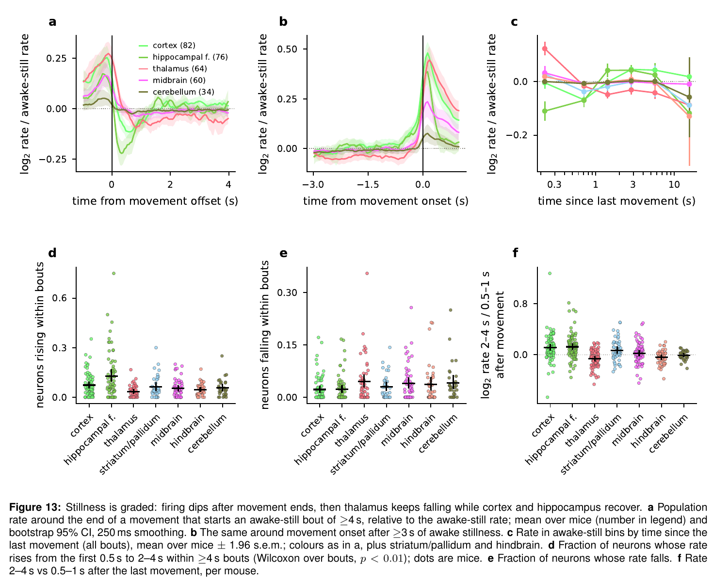
10.5 Neurons fluctuate together more in stillness
Within each region and probe (≥8 neurons), equal numbers of 100 ms still and moving bins are compared (Figure 14). Rates are lower in stillness and correlations depend on rate, so each neuron's spikes in its higher-rate state are binomially thinned to its rate in the other state.
Correlation: raw correlations hardly differ (−0.0001). Rate-matched, they are higher in stillness (+0.011, 82% of mice): cortex +0.023 (91%), hippocampal formation +0.026, thalamus +0.010. This fits the synchronised cortical state of quiet wakefulness (Poulet & Petersen 2008).
Dimensionality: the raw participation ratio is higher in stillness, but this is a rate effect; rate-matched, stillness is slightly lower-dimensional (−0.020, 70% of mice).
Synchronous events (summed count >3 SD above the within-state mean) are more frequent in stillness (81% of mice), most in the hippocampal formation. At 100 ms they are not identified sharp-wave ripples.
Exception: the cerebellum is less correlated and higher-dimensional in stillness, even rate-matched. Early (<1 s) and late (≥2 s) stillness give no clear evidence of further build-up.
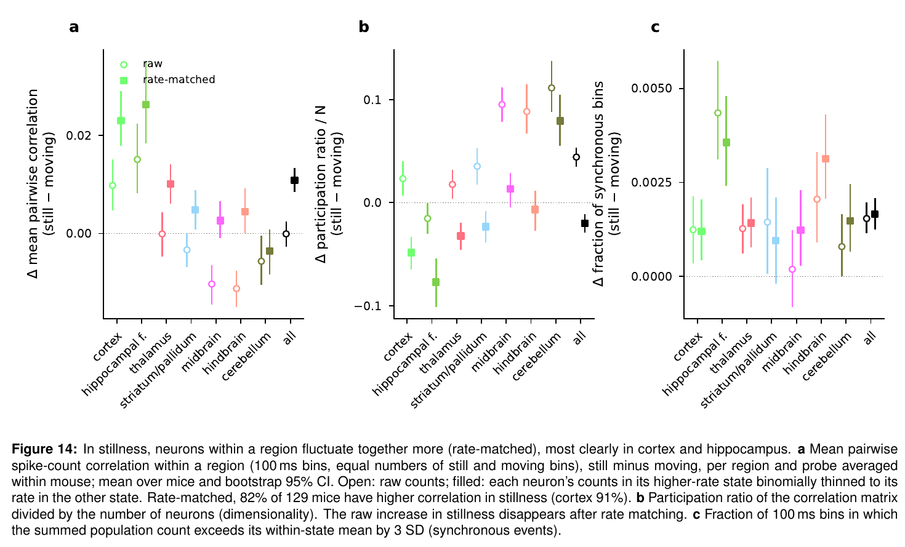
10.6 Arousal within stillness, and the DMN core
Pupil within stillness (Figure 15a; partial correlation with time and motion energy removed): not brain-wide (+0.006, 58% of mice positive). Thalamus is the exception (+0.026, 73%), strongest in VPM (+0.09), PO (+0.08), VM and TRN (+0.07).
Small-pupil stillness (below the gate, within 30 s of a movement; Figure 15b) is quieter than awake stillness in thalamus (−0.16, 82% of mice), hindbrain (−0.22) and midbrain (−0.12), unchanged in cortex and hippocampus.
DMN core (Figure 15d): no detected difference from other cortex, rate ratio −0.35 vs −0.43 (region permutation p = 0.49), still-preferring 17% vs 14% (p = 0.36). Paired within mice (39 mice with both), core minus other cortex is −0.01 (CI −0.18 to 0.16). This agrees with sections 5–6: the core is somewhat less movement-modulated than other cortex but not specifically rest-active.
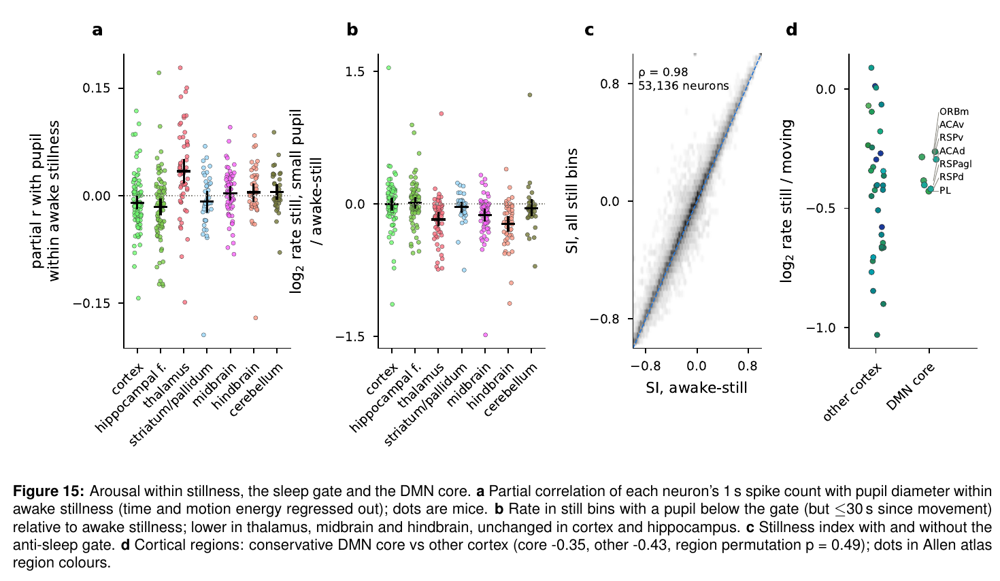
10.7 Robust versus area-specific correlates
Correlate of awake stillness
Across animals
Where
Lower population firing
Robust 129/130 mice
All divisions; most in orofacial brainstem and somatosensory thalamus, least in hippocampus, cerebellum and septum
A minority of still-preferring neurons (15%)
Robust 126/128 mice
Everywhere; enriched in cerebellar nuclei and lateral septum; depleted in thalamus
Preference is reproducible within a recording
Robust ρ 0.55–0.78
Brain-wide
Higher within-region synchrony, rate-matched
Robust 82% of mice
Forebrain (cortex 91%, hippocampus, thalamus); reversed in cerebellum
More synchronous population events
Robust 81% of mice
Largest in hippocampal formation
Pre-movement rise 0.3–0.5 s before leaving stillness
Robust
All divisions
Post-movement dip, then recovery within 1–2 s
Area-specific
Hippocampus and cortex
Continued decline with stillness duration
Area-specific 57–67% of mice
Weak in thalamus and hindbrain; cortex and hippocampus rise instead (77–79%)
Firing follows pupil within stillness
Area-specific 73% of mice
Thalamus only (VPM, PO, VM, TRN)
Lower firing in small-pupil stillness
Area-specific ~80% of mice
Thalamus, midbrain, hindbrain; not cortex or hippocampus
DMN core differs from other cortex
Not detected
p = 0.49 (rate), 0.36 (still-preferring)
The most robust correlates of idleness are not regional. Firing drops, local populations synchronise, and a stable minority of neurons in almost every region fire more. Regions differ mainly in how stillness unfolds over time (descriptively; division differences were not tested formally): thalamus tracks pupil and drifts down, while in hippocampus and cortex a brief undershoot after movement gives way to a synchronised, recovering and rising regime. A brain-wide "idle" signal therefore lives in population structure and in a distributed population of still-preferring cells rather than in the DMN or any other single area.
10.8 Robustness checks
Slow drift: comparing still and moving rates only within shared 10 s windows (≥0.5 s of each state) keeps the effect: rate ratio −0.37 (CI −0.41 to −0.34; 30 s windows −0.39), 130 mice, negative in every division.
Multiple comparisons: with Benjamini–Hochberg q < 0.01 over all neurons, 14.6% are still-preferring and 38.7% movement-preferring (pooled). FDR does not correct p-values miscalibrated by temporal dependence; the circular-shift null does.
Label calibration: rotating all neurons' counts against the behavioural labels gives a null rate of 1.2% still-preferring and 0.9% movement-preferring neurons, close to the nominal 1%. The null-corrected fractions are 13.6% and 39.4% (section 13.4, Figure 19a).
Within-session replication: stillness-index correlations computed per session (≥20 neurons) and averaged over mice: halves 0.76, grey vs inter-trial gaps 0.54, face vs wheel 0.73.
Subsets: sessions with pupil and motion energy −0.44 (119 mice); units ≥2 Hz −0.44. 57 sessions (13 mice) have no wheel trace on the grey screen, so "moving" there rests on motion energy and licks; without them: rate ratio −0.43, 14.8% still-preferring, rate-matched correlation +0.011 (84% of mice).
Part IIIIBL mesoscope
Two-photon mesoscope imaging of dorsal cortex in 153 canonical sessions from 12 mice, during the same task and passive protocol. The deconvolved activity of each ROI is averaged in 1 s bins, and ROIs are placed in the Allen atlas mostly from pre-histology estimates. The frontal core lies outside the imaged field, so RSP (RSPagl and RSPd) is the only core region. Most sessions have only 60 s of grey screen.
11. RSP coupling in the mesoscope
The mesoscope images many dorsal areas at once, but none of the frontal core, so its core is RSP (RSPagl and RSPd) alone.
Data: on the grey screen RSP is imaged in only 1–2 mice, too few to show. Figure 16 therefore uses inter-trial rest: still 1 s bins from 1 s after feedback to 0.2 s before the next stimulus, giving RSP pairs from 14 sessions and 5 mice.
RSP–RSP pairs (2 mice) are more coupled than distance predicts (+0.21 z), but they are adjacent subdivisions of one area.
RSP–other pairs (5 mice) are not more coupled than other–other pairs (−0.04 vs 0.00 z).
Per region: RSP couples least with trunk, limb and unassigned somatosensory cortex and most with MOp, VISal, VISam and VISp (each in only 2–4 mice). There is no pattern that follows the literature DMN regions.
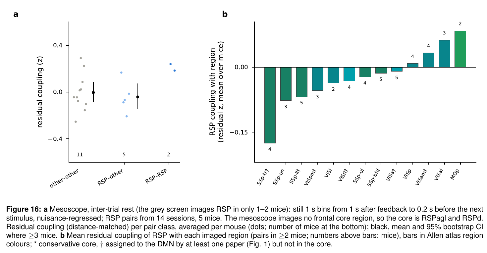
12. Correlates of stillness in the mesoscope
Does the section 10 stillness contrast hold in calcium imaging of dorsal cortex? Two features of the mesoscope sessions shape the analysis:
most sessions have only 60 s of grey screen;
during the task the mice turn the wheel almost continuously, with a median 1 s wheel speed of 0.2–0.3 rad/s and 1.6 s from feedback to the next trial.
The contrast therefore uses the passive block before the task replay: the grey screen plus receptive-field mapping, a median 6.2 min per session. The replay is left out because its tones and valve clicks evoke face movements together with cortical responses (Figure 17).
States: 1 s bins of deconvolved activity.
Moving bin: a lick, or face motion energy above the session's 60th percentile. The wheel is not recorded in this block.
Still bin: no movement within ±1 s, and at most 30 s since the last movement.
Tests are the section 10 tests, adapted to calcium:
Rate ratio: per ROI, log2((still + e)/(moving + e)), with e = 2% of the ROI's mean because the activity scale is arbitrary per ROI.
Still- and movement-preferring ROIs: Welch test of still against moving bins, at most one of each per 2 s, p < 0.01.
Null: a circular-shift null with 100 rotations.
Data: of 153 sessions, 101 have the passive intervals and 58 have motion energy in the block. 48 sessions from 9 mice pass inclusion (≥20 spaced bins of each state), with 351,490 ROIs. One more session was excluded because its null exceeded 5%: its population activity drifted fourfold across the block, and a quarter of its ROIs were silent in all still bins.
Activity is lower in stillness: log2 −0.20 (CI −0.30 to −0.12), below zero in 8 of 9 mice.
Visual areas: −0.27, 7 of 7 mice.
Somatosensory (−0.18, 6 of 9 mice) and motor areas (−0.16, 2 of 3) have CIs that include zero.
A still-preferring minority: 4.6% of ROIs are still-preferring, against a null of 1.4%, and 13.2% are movement-preferring, against 0.3%. The observed fractions exceed the null in every mouse.
RSP (DMN core) is imaged in only 2 mice (10 sessions). In those sessions:
RSP is less suppressed than the other imaged ROIs (−0.20 against −0.41; 9 of 10 sessions);
RSP has more still-preferring ROIs (7.3% against 4.2%).
Two mice cannot support a core-specific claim. The direction matches the Neuropixels data, where the core is slightly, not significantly, less movement-modulated than other cortex (section 10.6).
Comparison with Neuropixels: the sign and breadth of the effect agree with section 10, and visual cortex is clearly suppressed, as in IBL Neuropixels but not in Allen Visual Behavior (section 13). The magnitudes are not comparable, for three reasons:
deconvolved calcium in 1 s bins is not a firing rate;
movement here is face movement only;
the block contains sparse-noise stimuli, though they are not locked to movement.
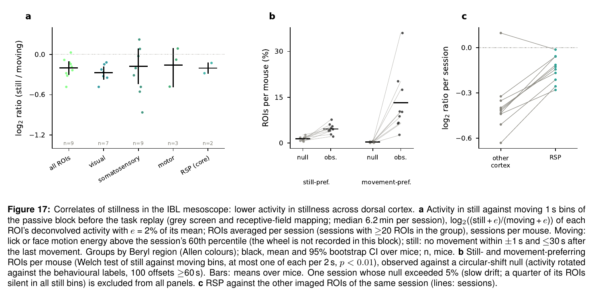
Part IVAllen Institute Neuropixels
Two external analyses of public Allen Neuropixels data, exported with their tables and scripts (comprehensive_report/allen/). Visual Behavior and Visual Coding sessions (34 mice) have a grey-screen block but almost no DMN core units, so they test the stillness correlates (section 13). OpenScope sessions (7 mice) record frontal core and RSP on separate probes, but have no stimulus-free block, so they test frontal–retrosplenial coupling during passive viewing (section 14). Movement is running speed only.
13. Correlates of stillness in Allen Visual Behavior and Visual Coding data, compared with IBL
Do the section 10 correlates hold in mice from another lab, rig and task? An independent analysis applied the section 10 pipeline to Allen Institute Neuropixels recordings, and a follow-up calibrated its neuron labels and onset rule. This chapter summarises both and compares them with the IBL data. Where the two pipelines differ, the IBL data were re-analysed with the Allen definitions, to test whether those differences explain the gaps.
13.1 Data and methods
Allen data:Visual Behavior Neuropixels (VBN; post-task grey screen, about 5 min, after an active change-detection task under water restriction) and Visual Coding Neuropixels (VC; the longest spontaneous grey block of a passive-viewing session, about 5 min). Units are the depositors' sorted units (VBN: Allen "good" units), with ≥0.5 Hz on the grey screen, in Allen CCF regions. 44 of 150 VBN sessions (30 mice) and 4 of 10 VC sessions (4 mice) passed the inclusion rule of ≥10 still and ≥10 moving 0.5 s epochs. Most exclusions were mice that ran for the whole grey screen. This leaves 63,399 of 84,661 units.
Allen states: 50 ms bins. A bin is moving if running speed exceeds 2 cm/s, and awake-still if it is not moving (±1 bin margin), at most 30 s after the last movement, and (VBN only) has pupil area at or above the task 10th percentile. There is no face video and grey-screen licks are not logged, so orofacial movement falls inside "still". Stillness is short: a median 0.66 min per session (24 still and 125 moving epochs), against 6.7 min in IBL.
Allen statistics (as in section 10): log2 rate ratio with 0.1 Hz pseudocount; Welch test (p < 0.01) of 0.5 s still against 0.5 s moving epochs, each lying entirely inside one state, at most one per 2 s; neurons averaged per session, sessions per mouse; Cosmos divisions with ≥20 neurons per session; population rate around running onsets after ≥1 s of stillness, as percent change from −2 to −1 s. The analysis is exploratory and was not pre-registered. Its export (report, per-neuron tables, scripts) is in comprehensive_report/allen/.
Allen follow-up (second export, 2 Nov), on the same 44 VBN sessions (30 mice):
a circular-shift null for the neuron labels: all neurons' grey-screen 50 ms counts are rotated together by a random offset (≥10 s from either end) against the fixed behavioural labels, and the labels are recomputed (200 rotations per session);
the pre-movement rise for onsets preceded by ≥3 s against ≥1 s of awake stillness, in sessions with ≥3 such onsets.
Its OpenScope coupling analysis is described in section 14.
the same null for the section 10 test, in the 386 sessions (129 mice) with ≥10 epochs of each state, also with still epochs subsampled to 24;
both onset rules, for any-movement onsets (report definition) and wheel onsets (wheel-only states), with the Allen window and baseline.
IBL re-analysis with the Allen definitions (neural_correlates_stillness/30_allen_matched.py): the 315 sessions (115 mice, 45,638 of the section 10 neurons) that have a wheel trace on the grey screen and pass the Allen inclusion rule. Three movement definitions: the report's (wheel, licks, face motion); wheel only (>0.05 rad/s; licks and face motion count as still, as in Allen); and 2 cm/s, the Allen running threshold converted to the wheel rim (0.65 rad/s, radius 3.1 cm), so that slow wheel turns count as still. Pupil gate and 30 s limit as in section 10. Allen epoch rule and aggregation. To match the short Allen stillness, the per-neuron test was repeated with still epochs randomly subsampled to 12, 24, 48 and 96 per session.
13.2 What replicates
Lower firing in stillness in every mouse: 34 of 34 Allen mice; VBN −0.12 (CI −0.15 to −0.09), VC −0.17 (−0.23 to −0.10). The same IBL sessions give −0.42 (115/115 mice) (Figure 18a).
A still-preferring minority, once still time is matched: Allen mice have 11.9% still-preferring (CI 10.6–13.4) and 24.1% movement-preferring neurons, against 15% and 41% in IBL. The still-preferring fraction depends mainly on still time (Figure 18b). Subsampled to the Allen median of 24 still epochs, IBL gives only 7.3% (9.1% wheel only). At matched still time, then, the still-preferring minority is at least as large in Allen mice. Movement-preferring neurons remain fewer in Allen: 24% against 32–33% at 24 epochs (Figure 18c).
The midbrain matches quantitatively: −0.45 in IBL (wheel only; 55/57 mice) against −0.47 in VBN (26/28) and −0.44 in VC (Figure 18d).
The regional ordering partly carries over: over 25 regions recorded in both datasets, IBL and Allen rate ratios correlate (Spearman ρ = 0.45, p = 0.02). APN, Eth and POL (midbrain and posterior thalamus) are among the most suppressed regions in both datasets, and hippocampal CA1, CA3 and DG among the least. LGv is the clearest exception: strongly suppressed in IBL, slightly enhanced in Allen mice (Figure 18e).
Firing rises before movement: Allen +6.6% from −0.5 to −0.05 s before running onset (25/27 mice). IBL shows the same with wheel onsets (+3.0%, 85/114 mice) and with the any-movement onsets of section 10.4 (+3.4%, 101/120) (Figure 18f). In both datasets the rise grows when onsets need longer prior stillness (section 13.4).
13.3 What does not replicate
Size in the forebrain: the Allen effect is about a third of the IBL effect, and 20 of the 25 shared regions are less suppressed in Allen mice (mean difference +0.23). By division, thalamus is −0.15 in VBN against −0.59 in IBL, and hippocampal formation −0.10 against −0.22. Visual cortex shows no stillness effect in VBN (+0.04, CI −0.00 to +0.10; 12/30 mice below zero), against −0.37 in IBL visual areas (32/34 mice). The 4 VC mice sit in between (−0.18, 4/4 below zero).
The movement definition explains less than half of the gap: counting face motion and licks as still (wheel only) moves IBL from −0.42 to −0.38. Raising the threshold to 2 cm/s moves it further, to −0.29 (106/115 mice below zero). Both remain well below Allen's −0.12 (Figure 18a). The 2 cm/s definition leaves few moving epochs (median 10 per session), which lowers IBL movement-preferring neurons to 14% at 24 still epochs, below Allen's 24%. Only 8% of wheel-only still bins contain face motion or licks, so in IBL the grey-screen movement contrast is carried mostly by wheel turns.
Short still periods do not explain it: still time sets the preference fractions but not the rate ratio (the Allen analysis finds ρ = −0.15 between ratio and still epochs). IBL stillness within 2 s of a movement, the regime of most Allen still time, gives −0.43 brain-wide and −0.61 in visual cortex.
Remaining candidates (untested): the behaviour itself, running on a disc against forelimb wheel turns; selection, since only Allen mice that stopped running were included; and the arousal state after each task. The VBN–VC difference in visual cortex fits a context effect (post-task against naive passive viewing), but IBL is also post-task and shows a strong cortical effect. With 4 VC mice this remains a hint.
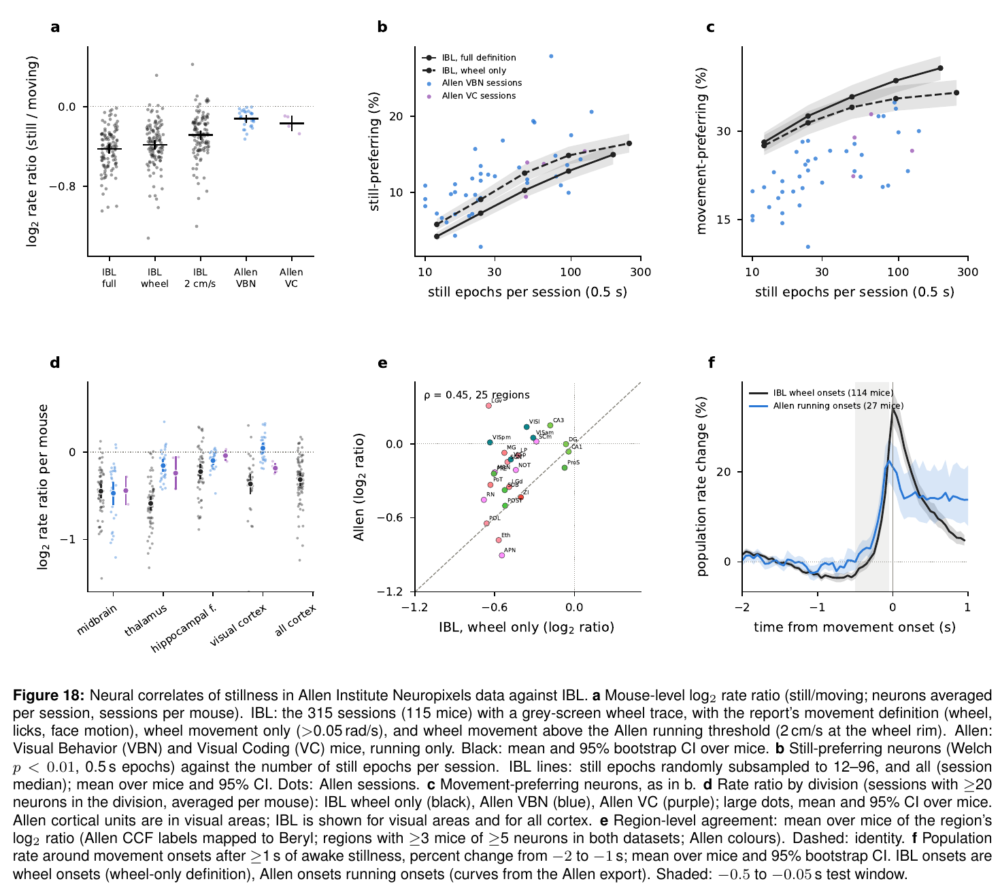
13.4 Calibrating the neuron labels, and the onset rule
The still-preferring minority survives a circular-shift null in both datasets (Figure 19a).
Allen VBN: 11.8% of neurons are still-preferring against a null of 0.8% (corrected 11.0%, CI 9.6–12.6), and 23.6% movement-preferring against 2.8% (corrected 20.8%).
IBL: the null is 1.2% and 0.9%, close to the nominal 1%. The corrected fractions are 13.6% (CI 12.4–14.9) and 39.4%.
Observed fractions exceed the null's 95th percentile in all 44 Allen sessions, and in 339 (still-preferring) and 382 (movement-preferring) of 386 IBL sessions.
Few epochs inflate the labels (Figure 19b). The null rate rises as the opposite state gets fewer epochs, up to 5–10% in Allen sessions with fewer than about 20. IBL sessions rarely get there (median 199 still and 141 moving epochs). With still epochs subsampled to the Allen median of 24, the IBL movement-preferring null rises from 0.9% to 2.2%. At that matched still time IBL has 6.8% still-preferring neurons after null correction, against 11.0% in Allen mice, so the comparison of section 13.2 stands.
Longer prior stillness gives a larger pre-movement rise, by the same amount in both datasets (Figure 19c–d). With onsets preceded by ≥3 s instead of ≥1 s of awake stillness:
the Allen rise grows from +5.0% (24 of 27 mice) to +12.3% (12 of 12 mice);
the IBL wheel-onset rise grows from +3.1% (88 of 118) to +8.3% (112 of 116).
Paired over sessions measurable under both rules, the difference is +5.0 percentage points in Allen (15 of 17 sessions) and +4.7 in IBL (277 of 323). IBL any-movement onsets, which include face and lick onsets, rise less: −1.8% under the loose rule, whose −2 to −1 s baseline can still contain the previous movement, and +3.5% under the strict one.
What this resolves: the Allen pre-movement rise is not an artefact of the loose onset rule, and IBL wheel onsets depend on prior stillness in the same way. The IBL rise is the smaller one under both rules. Running onsets at 2 cm/s can lag the true start of movement, so part of the Allen rise may still be early, sub-threshold movement.
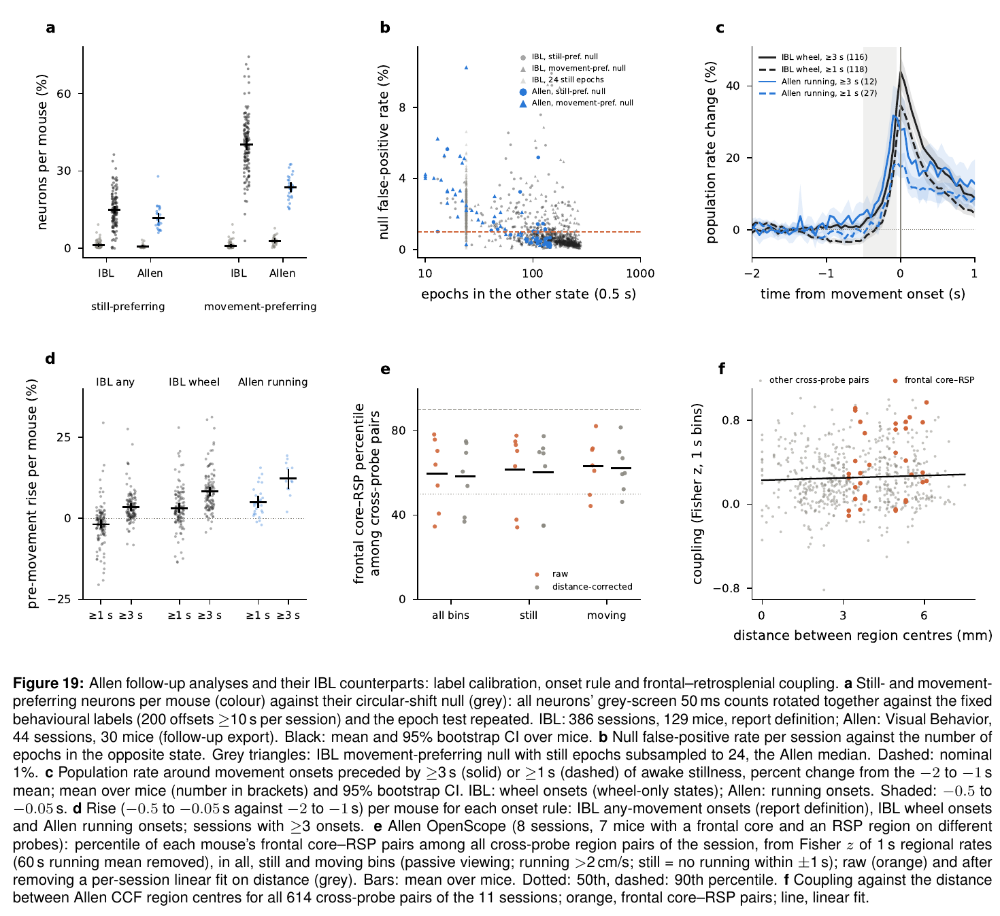
13.5 What this means for the IBL findings and the DMN
The non-regional correlates of section 10.7 hold in independent mice. Firing is lower in stillness in every mouse, a still-preferring minority remains above a calibrated null, and firing rises before movement, more after longer stillness. The regional profile partly carries over: midbrain and posterior thalamus are suppressed most, hippocampus least. The IBL magnitudes are not general. In Allen mice the forebrain, especially visual cortex during VBN's post-task grey screen, is much less movement-modulated, and the movement definition and short still bouts do not account for the difference. Section 10's brain-wide magnitude (26% lower firing) should therefore be read as specific to the IBL task and rig, not as a constant of stillness. The DMN core cannot be compared with other cortex in these data: their cortical units lie in visual areas (VISp, VISl, VISal, VISrl, VISam, VISpm), and only 3 units in 1 mouse are in a core region (RSPd). The OpenScope sessions of section 14 do record the core. Synchrony, the thalamic pupil dependence and within-bout time courses were not tested, because Allen still periods are too short.
14. Frontal–retrosplenial coupling in Allen OpenScope recordings
Frontal core with RSP is the link at the centre of every rodent DMN map. The BWM never records it (section 7), and the IBL mesoscope does not image the frontal core. Some Allen OpenScope Neuropixels sessions place probes in both, and the Allen follow-up measured their coupling directly (Figure 19e–f).
Data: 11 sessions (10 mice) from DANDI 000563, 000690 and 001637. 8 sessions from 7 mice have a frontal core region (ACAd, ACAv, PL or ORBm) and an RSP region (RSPagl, RSPd or RSPv) on different probes, each with ≥10 units at ≥0.5 Hz.
Method:
Region population rates in 1 s bins, with a 60 s running mean removed.
Fisher-z correlation of every cross-probe region pair (614 pairs), in all bins, and separately in still and moving bins (running above 2 cm/s; still means no running within ±1 s).
The window runs from the first to the last stimulus onset, excluding optotagging. These sessions have no stimulus-free block, so coupling is measured during passive viewing.
Distance correction: the residual from a per-session linear fit of z on the distance between Allen CCF region centres.
Unlike section 8, movement is not regressed out; the still-bin estimate serves as the movement control. In the Temporal Barcode sessions, removing the repeat-locked component of the flicker stimulus is an extra control.
Result:
Frontal core–RSP pairs sit at a mean percentile of 60 among the cross-probe pairs of their session: 5 of 7 mice are above the 50th percentile, none above the 90th. After distance correction the mean is 58.
Their residual coupling is above zero in 5 of 7 mice (p = 0.22).
It is no stronger in stillness: still minus moving is +0.008 z (higher in 5 of 7 mice, p = 0.69).
Coupling barely depends on distance in these sessions (0.007 z per mm, ρ = 0.03), so the correction changes little.
Removing the flicker-locked component leaves coupling unchanged in the two mice where it can be tested.
What this means: measured with single neurons, frontal–retrosplenial coupling is only slightly above that of other cross-probe pairs, and it does not strengthen in stillness. This is the first direct test of the DMN's defining link in this report. It is not a resting-state test: there is no grey screen, only 7 mice, and running is the only movement measure. One session (DANDI 000690) has a block of spontaneous activity and could support a true rest test in one mouse.
Part VAllen Institute mesoscope and two-photon
15. Allen mesoscope and two-photon data: not analysed yet
No Allen imaging data have been analysed for this report.
What these data cover: the Allen two-photon datasets, Visual Coding and Visual Behavior Optical Physiology (part of it recorded with a multi-plane mesoscope), image mainly visual cortex.
What they could test: like the Allen Neuropixels data, the correlates of stillness rather than the DMN core. They would add a calcium-imaging counterpart to Part IV, as Part III does for Part II.
How: the rate ratio and the calibrated still-preferring fraction of section 12 can be computed wherever a spontaneous or grey-screen block and running speed are recorded.
Part VIAcross datasets
What holds in every dataset, what does not, and how far the evidence for a DMN analogue goes.
16. Correlates of stillness across datasets
Each row applies one test to each dataset. Values are means over mice, with the number of mice in which the effect has the stated sign.
Correlate of awake stillness
IBL Neuropixels
IBL mesoscope
Allen Neuropixels
Allen imaging
Lower activity than in movement (log2 ratio)
−0.43; 129/130 mice
−0.20; 8/9 mice (calcium)
VBN −0.12, VC −0.17; 34/34 mice
not analysed
Still-preferring minority above the circular-shift null
13.6% (null 1.2%)
4.6% (null 1.4%)
VBN 11.0% (null 0.8%)
not analysed
Movement-preferring, above the null
39.4% (null 0.9%)
13.2% (null 0.3%)
VBN 20.8% (null 2.8%)
not analysed
Visual cortex suppressed in stillness
−0.37; 32/34 mice
−0.27; 7/7 mice
VBN +0.04 (12/30 below 0); VC −0.18 (4/4)
not analysed
Rise before movement, larger after ≥3 s than ≥1 s of stillness
wheel onsets +3.1% → +8.3%
n/a (1 s bins)
running onsets +5.0% → +12.3%
not analysed
Midbrain suppressed strongly, hippocampus least
yes (midbrain −0.45)
n/a (cortex only)
yes (midbrain −0.47); region ranks ρ = 0.45
not analysed
Higher synchrony in stillness, rate-matched
82% of mice
not run
n/a
not analysed
DMN core differs from other cortex
no (p = 0.49)
RSP less suppressed in 9/10 sessions (2 mice)
n/a (no core units)
not analysed
IBL Neuropixels values use the report's movement definition (wheel, licks, face motion), except the onset row (wheel onsets) and the visual-cortex and midbrain values (wheel only, the 315 sessions of section 13). Mesoscope values are deconvolved calcium in 1 s bins and are not comparable in size.
Robust in every dataset tested:
Activity is lower in awake stillness, across the brain and in nearly every mouse.
A minority of neurons or ROIs prefers stillness, well above the null rate.
Firing rises before movement, and rises more the longer the mouse has been still.
Dataset-specific:
The size of the effect: IBL Neuropixels about three times Allen.
Visual cortex: suppressed in both IBL datasets and in Allen Visual Coding, but not after the Allen Visual Behavior task.
The share of movement-preferring cells.
Matching the movement definition and still time explains only part of these differences (section 13.3).
The DMN core: it never stands out. In IBL Neuropixels its stillness profile equals other cortex. In the mesoscope, RSP is less suppressed, but in only 2 mice.
17. How convincing is the evidence for a DMN analogue?
The criteria below are judged over all datasets; the evidence column names the dataset.
Criterion
Verdict
Evidence
A true rest period exists in the data
Yes
IBL Neuropixels: 10 min grey screen in 396 sessions, about 6.5 min of it still. Allen VBN/VC: about 5 min, under 1 min still. IBL mesoscope: 60 s. Allen OpenScope: none
The DMN regions are agreed in the literature
Partly
ACA and RSP in all four maps, PL and ORB in three; the rest disputed
Core DMN regions have relatively more rest-preferring neurons than other cortex
Weak
42% vs 35% suppressed: mouse CI excludes 0, region permutation p = 0.07; not vs higher-order cortex; ORBm and RSP yes, ACA no
Core firing drops during the task relative to the region's own rest (fMRI-style deactivation)
No
+19% during movement and feedback, +10% after the stimulus; smaller increase than other cortex (+39%) but not significant within session
Core firing drops during engaged, still waiting (quiescence vs inter-trial rest)
Not specific
−6% in the core, −5% in other cortex; differs only from the brain-wide average
Core regions fluctuate differently at rest (fALFF, amplitude, synchrony)
No
Reproducible maps, no core difference after rate adjustment
Core regions co-fluctuate at rest more than with other regions
Not shown
+0.0005 z (18 mice); detectable effect ≥0.15 z; two-probe pairs too few
Core regions are more active in awake stillness than other cortex (still vs moving on the grey screen)
No
IBL Neuropixels: rate ratio −0.35 vs −0.43, p = 0.49; still-preferring 17% vs 14%, p = 0.36 (section 10). IBL mesoscope: RSP less suppressed than other imaged cortex in 9 of 10 sessions, but only 2 mice (section 12)
Frontal and retrosplenial DMN are coupled
Not shown
Allen OpenScope, passive viewing, 7 mice: frontal core–RSP pairs at the 60th percentile of cross-probe pairs (none above the 90th), no stronger in stillness (section 14). Never recorded together in the BWM; frontal core not imaged in the IBL mesoscope
Restricted to the regions the literature agrees on, the BWM gives at most weak evidence for task-negative DMN activity, and only in a relative sense: the core is less recruited by movement and the task than other cortex, but its population firing never drops below its own resting level. The orbital and retrosplenial parts of the core prefer rest; the anterior cingulate does not. Earlier, stronger results depended on regions outside this core (ILA, ECT, PERI, TEa). A resting-state DMN is defined by co-fluctuation between frontal and retrosplenial cortex. BWM recordings never contain both. Allen OpenScope recordings do, and there the two are only slightly more coupled than other cortical pairs and not more so in stillness, but these recordings contain no rest block. A convincing test still needs simultaneous frontal and posterior recordings with a long grey-screen block: multi-probe sessions targeting ACA/PL and RSP, or wide-field or mesoscope imaging that includes medial frontal cortex. The one OpenScope session with a spontaneous block is the nearest existing candidate.
Discussion
Main findings
A robust, non-regional signature of awake stillness. It holds in two labs and with both electrophysiology and calcium imaging.
Activity is lower in stillness than during spontaneous movement in nearly every mouse.
A minority of neurons prefers stillness. This survives a circular-shift null that keeps each neuron's autocorrelation: 13.6% in IBL and 11.0% in Allen mice.
Firing rises before movement.
In IBL Neuropixels, two further properties hold within recordings and across mice: still preference is a reproducible neuron property, and rate-matched local synchrony rises in stillness. The regional profile partly carries over between labs: midbrain and posterior thalamus are suppressed most, hippocampus least.
Pre-movement activity depends on prior stillness. Requiring ≥3 s instead of ≥1 s of stillness before an onset raises the pre-movement rise by the same amount in both labs (+4.7 and +5.0 percentage points). The rise is therefore not an artefact of a loose onset rule.
Magnitudes are not general. The stillness effect in Allen mice is about a third of IBL's, and visual cortex shows none after the Visual Behavior task, while it is clearly suppressed in IBL Neuropixels, the IBL mesoscope and Allen Visual Coding. Matching the movement definition and still time closes less than half of the gap. Brain-wide magnitudes such as IBL's 26% lower firing should therefore be read as properties of a lab, rig and behaviour, not as constants of stillness.
Little evidence for a DMN analogue.
The conservative core is less recruited by movement and the task than other cortex, but its population firing never drops below its own resting level.
In stillness the core behaves like other cortex.
Where frontal core and RSP are recorded together (Allen OpenScope), they are coupled only slightly more than other cross-probe pairs, and not more in stillness.
The orbital and retrosplenial parts of the core prefer rest more than the anterior cingulate does. Earlier, stronger results depended on regions outside the core.
What the rodent DMN papers claim, and what was tested
None of the four rodent DMN papers claims or tests that DMN regions deactivate during a task, and none records spikes. All four define the DMN by resting-state co-fluctuation (plus anatomy), mostly in anaesthetised or sedated animals. The task-negative idea tested in sections 5–6 comes from human imaging. The rodent papers' defining property, coupled fluctuation between frontal and retrosplenial cortex, cannot be tested in the BWM. Allen OpenScope recordings give a first test of it, during passive viewing (section 14).
Paper
Main claims
Relevance to this report
Lu et al. 2012 (PNAS), rat
Rats have a DMN like that of primates and humans. Group ICA of rsfMRI under dexmedetomidine/isoflurane finds orbital, prelimbic and cingulate cortex, auditory/temporal association cortex, posterior parietal cortex, RSP and medial secondary visual cortex (dorsal CA1 tentative). The network splits into a prefrontal-temporal and a parietal module with prefrontal cortex and RSP as hubs. They propose the DMN is a conserved mammalian feature integrating multisensory and emotional information.
Defined by coupling at rest under anaesthesia; no task.
Grandjean et al. 2020 (NeuroImage), mouse, 17 datasets
Mouse resting-state networks, including a DMN, are reproducible across centres. An anterior cingulate seed shows prefrontal cortex, RSP, dorsal striatum, dorsal thalamus and peri-hippocampal areas. How specifically the DMN is detected depends on anaesthesia (best with medetomidine-isoflurane and ventilation), field strength and coil. A lateral cortical network appears antagonistic to the midline DMN.
Defined by coupling. The antagonism between DMN and lateral cortex is the closest these papers come to “task-negative vs task-positive”.
Whitesell et al. 2021 (Neuron), mouse
An Allen-registered rsfMRI DMN map under halothane, combined with tracing. DMN cortical regions are preferentially connected to each other. Layer 2/3 DMN neurons project almost only within the DMN, layer 5 neurons both inside and outside it. RSP contains two layer-5 projection types, inside- and outside-projecting, that differ in laminar position and gene expression.
Anatomy and rsfMRI; no activity during tasks.
Mandino et al. 2022 (Mol. Psychiatry), mouse with human and macaque comparison
The mouse has a triple-network organisation (salience, default-mode and lateral cortical / central-executive) with spatio-temporal properties shared with humans and macaques. The model's predictions hold in a mouse model of depression (chronic social stress). Tracer maps were validated with optogenetics, and mouse maps can be converted to human coordinates. Serotonin is linked to the salience network rather than the DMN.
Defined by resting-state co-activation patterns; cortical DMN = ACA and RSP.
Human DMN papers, cited for the definition of deactivation:
Shulman et al. 1997 (a PET meta-analysis): a consistent set of regions decreases its blood flow during many different active tasks compared with passive conditions: medial frontal cortex, posterior cingulate/precuneus and lateral parietal cortex.
Raichle et al. 2001 interpreted these decreases as an organised baseline, a “default mode” suspended during goal-directed tasks, rather than deactivation from an arbitrary baseline.
Movement papers, cited for the confound: Stringer et al. 2019 and Musall et al. 2019 showed that spontaneous and uninstructed movements drive a large share of activity across mouse cortex, during rest and during tasks. This is why section 6 separates movement from engagement.
Earlier region sources: Stafford et al. 2014, Sforazzini et al. 2014 and Gozzi & Schwarz 2016 are cited only for the region set of earlier report versions. They too are rsfMRI and connectome studies.
What this means. The rodent DMN is established as a resting-state network. Whether its regions are task-negative in mice is an open question, and these data answer it mostly in the negative: the core is less recruited by the task than other cortex, but it is not deactivated. Its defining coupling can so far be tested only during passive viewing, where it is weak. The rodent literature that does test task-induced deactivation, for example fMRI or fibre photometry during behaviour, has not yet been reviewed here. It would give the rest-preference results a direct rodent reference point.
Caveats
Post-task rest. The IBL and Allen VBN grey screens follow an hour of task under water restriction; this is not a naive resting state, and the rodent DMN maps come from anaesthetised animals. Arousal, satiety and drift all differ between task and grey screen. Comparisons between regions are less affected than absolute levels.
What "still" means.
Movement is defined by what each rig records. In IBL Neuropixels that is wheel, licks and face motion; in the IBL mesoscope, face motion and licks; in Allen data, running only. Orofacial movement therefore falls inside Allen "stillness".
Part of the stillness effect in sensory and orofacial regions is the absence of reafferent input; motor and sensory causes are not separated.
"Awake" rests on a pupil gate and a 30 s limit; pupil is an indirect sleep marker, and there is no LFP or EMG. The meaning of the VBN pupil-area stream is flagged as unconfirmed by its platform.
Neuron labels. Welch p-values on spaced epochs still carry temporal autocorrelation. The circular-shift null calibrates them, but it is liberal when one state has few epochs (Allen sessions with fewer than about 20). FDR correction does not address this dependence.
Coupling.
Mean region-pair correlations in still 1 s bins are small (0.07 across probes, 0.10 within a probe), so coupling differences need many mice.
Pairs that share a region signal are not independent within a session.
Rate thinning does not control slow shared drift.
The OpenScope coupling is measured during passive viewing, in 7 mice with 2–3 loaded probes per session, without regressing out movement.
Mesoscope.
ROI labels are mostly pre-histology estimates, and RSP lies at the edge of most fields of view.
Deconvolved calcium in 1 s bins is not a firing rate, and the stillness block contains sparse-noise stimuli.
9 mice, with RSP in 2.
Allen analyses. These are exported analyses (scripts included) that were recomputed here from their tables, not from raw data. Allen stillness is short (median 0.66 min per session). Running onsets at a 2 cm/s threshold can lag the true start of movement, and only 12 of 30 mice have enough onsets after ≥3 s of stillness.
Resolution and scope. At 50–100 ms, ripples and fast oscillations cannot be resolved. A sensitivity analysis over the behavioural-window choices (section 6) has not been run. All analyses are exploratory and were not pre-registered.
Outlook
Three recordings would test what these data leave open.
A resting-state DMN test: frontal core and RSP recorded at the same time during a long grey-screen block. That means multi-probe sessions targeting ACA/PL and RSP, or wide-field or mesoscope imaging that includes medial frontal cortex. The one OpenScope session with a spontaneous block (DANDI 000690) is the nearest existing candidate.
Allen imaging: Allen two-photon and mesoscope data with running speed would add a calcium counterpart to the Allen Neuropixels stillness results.
Mesoscope with the wheel: passive blocks with the wheel recorded would let the mesoscope separate wheel from face movement.
References
Allen Institute MindScope Program (2023). Visual Behavior Neuropixels. DANDI Archive, dandiset 000713.
Allen Institute OpenScope. Neuropixels datasets, DANDI Archive, dandisets 000563, 000690 and 001637.
Gozzi A, Schwarz AJ (2016). Large-scale functional connectivity networks in the rodent brain. NeuroImage 127:496–509.
Grandjean J, et al. (2020). Common functional networks in the mouse brain revealed by multi-centre resting-state fMRI analysis. NeuroImage 205:116278. doi:10.1016/j.neuroimage.2019.116278
International Brain Laboratory, et al. (2023). A brain-wide map of neural activity during complex behaviour. bioRxiv 2023.07.04.547681. doi:10.1101/2023.07.04.547681
Lu H, et al. (2012). Rat brains also have a default mode network. PNAS 109:3979–3984. doi:10.1073/pnas.1200506109
Mandino F, et al. (2022). A triple-network organization for the mouse brain. Molecular Psychiatry 27. doi:10.1038/s41380-021-01298-5
Musall S, Kaufman MT, Juavinett AL, Gluf S, Churchland AK (2019). Single-trial neural dynamics are dominated by richly varied movements. Nature Neuroscience 22:1677–1686.
Poulet JFA, Petersen CCH (2008). Internal brain state regulates membrane potential synchrony in barrel cortex of behaving mice. Nature 454:881–885. doi:10.1038/nature07150
Raichle ME, MacLeod AM, Snyder AZ, Powers WJ, Gusnard DA, Shulman GL (2001). A default mode of brain function. PNAS 98:676–682.
Sforazzini F, Schwarz AJ, Galbusera A, Bifone A, Gozzi A (2014). Distributed BOLD and CBV-weighted resting-state networks in the mouse brain. NeuroImage 87:403–415.
Shulman GL, et al. (1997). Common blood flow changes across visual tasks: II. Decreases in cerebral cortex. Journal of Cognitive Neuroscience 9:648–663.
Siegle JH, et al. (2021). Survey of spiking in the mouse visual system reveals functional hierarchy. Nature 592:86–92.
Stafford JM, et al. (2014). Large-scale topology and the default mode network in the mouse connectome. PNAS 111:18745–18750.
Stringer C, Pachitariu M, Steinmetz N, Reddy CB, Carandini M, Harris KD (2019). Spontaneous behaviors drive multidimensional, brainwide activity. Science 364:eaav7893.
Wang Q, et al. (2020). The Allen Mouse Brain Common Coordinate Framework: a 3D reference atlas. Cell 181:936–953.
Whitesell JD, et al. (2021). Regional, layer, and cell-type-specific connectivity of the mouse default mode network. Neuron 109:545–559. doi:10.1016/j.neuron.2020.11.011
The four rodent DMN papers were read for this report. The summaries of the human and movement papers are from general knowledge and were not re-checked against the papers. Reference details without a DOI link were not checked against the publisher.
Methods
Data
IBL Neuropixels (BWM): 2023 release (International Brain Laboratory et al. 2023), all bwm_query insertions, good units: 426 sessions from 138 mice. Spike counts are binned at 50 ms over the whole recording, with wheel speed, licks, left-camera motion energy and pupil diameter on the same grid. The grey screen is spontaneousActivity from _ibl_passivePeriods.intervalsTable (396 sessions, 130 mice; 600 s, or 300 s in 55 sessions), skipping its first second. Neurons need ≥0.5 Hz.
IBL mesoscope: 153 canonical sessions from 12 mice; deconvolved ROI activity in 1 s bins over the whole recording, with wheel, licks, motion energy and pupil on the same grid. ROIs are placed in the Allen CCF (Wang et al. 2020) mostly from pre-histology estimates.
Grey-screen coupling needs ≥200 s of grey screen and motion energy. Figure 16 uses inter-trial rest instead: still 1 s bins from 1 s after feedback to 0.2 s before the next stimulus.
The stillness analysis (Figure 17) uses the passive block from the grey-screen start (plus 2 s) to the end of receptive-field mapping, taken from _ibl_passivePeriods.intervalsTable. The task replay is excluded.
Allen Visual Behavior (VBN, DANDI 000713) and Visual Coding Neuropixels (VC; Siegle et al. 2021):
Rest period: the post-task grey screen (VBN) or the longest spontaneous grey block of a passive-viewing session (VC), about 5 min each.
Units: the depositors' sorted units (VBN: "good" units) with ≥0.5 Hz on the grey screen, in Allen CCF regions mapped to Beryl.
Inclusion: 44 of 150 VBN sessions (30 mice) and 4 of 10 VC sessions (4 mice) have ≥10 still and ≥10 moving 0.5 s epochs, leaving 63,399 of 84,661 units.
Allen OpenScope Neuropixels (DANDI 000563, 000690, 001637): 11 sessions (10 mice) with frontal or retrosplenial units; 8 sessions (7 mice) have a frontal core and an RSP region on different probes. The analysis window runs from the first to the last stimulus onset, excluding optotagging.
Exported analyses: the Allen analyses are two exports of an external analysis, with per-neuron, per-session and per-mouse tables, scripts and provenance (comprehensive_report/allen/). Every Allen number in this report is recomputed here from those tables.
Behavioural states
IBL Neuropixels, 50 ms bins:
Moving: wheel speed >0.05 rad/s, a detected lick, or motion energy above the session's 60th percentile.
Still: none of these, with one bin on either side of any movement also excluded.
Coupling: 1 s (or 0.5 s) bins are used only if all their 50 ms bins are still.
Awake-still (sections 10, 13): a still bin at most 30 s after the last movement, with pupil at or above the 10th percentile of the session's task-period pupil. Sessions without pupil are gated by the 30 s limit only.
IBL with the Allen definitions (section 13; 315 sessions, 115 mice):
wheel only: moving = wheel >0.05 rad/s, so licks and face motion count as still;
2 cm/s: moving = wheel >0.65 rad/s, the Allen running threshold at the wheel rim (radius 3.1 cm).
Sessions need a wheel trace on ≥50% of the grey screen and the Allen inclusion rule.
IBL mesoscope, 1 s bins: moving = wheel >0.05 rad/s where recorded, a lick, or motion energy above the session's 60th percentile over the whole recording. Still = no movement in the bin or its neighbours, and ≤30 s since the last movement.
Allen, 50 ms bins: moving = running speed >2 cm/s. Awake-still = not moving (±1 bin margin), ≤30 s after the last movement, and (VBN only) pupil area at or above the task 10th percentile.
OpenScope, 1 s bins: moving = maximum running speed in the bin >2 cm/s; still = no running within ±1 s.
Whitesell et al. (2021): ACAd, ACAv, PL, ILA, ORBl, ORBm, ORBvl, VISa, VISam, RSPagl, RSPd, RSPv, SSp-tr, SSp-ll, MOs (their Fig. 1E, >50% of voxels in the core mask).
Lu et al. (2012), mapped to mouse: ORBm, ORBl, ORBvl, PL, ACAd, ACAv, AUDp, AUDd, AUDv, TEa (prefrontal-temporal module); RSPagl, RSPd, RSPv, VISa, VISrl, VISam, VISpm, CA1 (parietal module).
Grandjean et al. (2020): ACAd, ACAv, RSPagl, RSPd, RSPv, TEa, and their unspecified prefrontal component mapped to PL, ILA, ORBm, ORBl, ORBvl.
Mandino et al. (2022): ACAd, ACAv, RSPagl, RSPd, RSPv.
Higher-order cortex: cortex outside the tested set and outside the primary areas (VISp, SSp, MOp, AUDp, GU, VISC).
Earlier versions of this report used a broader set (ACA, PL, ILA, ORB, RSP, VISa, VISam, plus TEa, ECT and PERI as "lateral"). ECT and PERI are in none of the four maps (Stafford et al. 2014; Sforazzini et al. 2014; Gozzi and Schwarz 2016 were the sources of that set).
Metrics
Rest preference (Figure 4):
Rest samples: 0.3 s chunks of consecutive still grey-screen bins. The rate uses all chunks (median 1,171 per session); the test uses the first chunk in every 3 s window (median 186).
Task samples: per-trial rates in the movement-onset (−0.15–0 s), movement (0–0.15 s) and feedback (0–0.3 s) windows, averaged, under BWM trial criteria (median 381 trials).
Indices: rest index RI = (rest − task)/(rest + task). Drift index = (last − first)/(last + first) task-window rate over thirds of trials.
Behavioural windows (Figures 5–6):
Rates: per neuron, the spike count summed over all qualifying trials or bins of a session divided by their duration. Each window needs ≥2 s of bins per session. Contrasts are log2((a + 0.1)/(b + 0.1)).
Suppressed (Figure 6c): per-trial rest rate (trials with ≥2 still bins) against the per-trial movement + feedback rate.
Trial-wise co-fluctuation: per region (≥5 neurons on one probe), the mean of z-scored per-trial window rates, with trial number (2nd order), per-trial motion energy and pupil regressed out. Correlations across ≥50 trials, residualised for distance and probe relation.
Co-fluctuation (Figures 7, 8 and 16):
Nuisance regression: per neuron, wheel, licks and motion energy (each with a 1-bin lag; no lags in the mesoscope) are regressed out within still bins.
Region signal: the mean of z-scored neurons per region and probe (≥5 neurons; ≥10 ROIs in the mesoscope, with split-half reliability ≥0.5).
Coupling: Fisher z of the pair correlation, minus the mean z of cortical (and CA1) pairs in the same 0.5 mm 3-D distance bin and probe relation. The mesoscope uses ML–AP distance with hemispheres folded.
Classes: DMN–DMN, DMN–other and other–other pairs.
Rest-preference network: cortical regions split into terciles of grey-screen RI in one half of the mice, with coupling evaluated in the other half.
Single-region metrics (Figure 9): 1 s binned counts over the grey screen, with wheel, licks and motion energy (1-bin lag) regressed out.
fALFF: Welch spectrum with 128 s segments; power in 0.01–0.1 Hz over power in 0.01–0.5 Hz.
CV: standard deviation over mean of the 1 s rate.
Local synchrony: mean pairwise correlation between neurons of one region on one probe (≥5 neurons), in fully still 1 s bins (≥120).
Rate adjustment: each metric is replaced by its residual after a linear fit on log firing rate.
Stillness correlates, IBL Neuropixels (Figures 10–15). Sessions need ≥30 s of awake stillness and ≥10 s of movement on the grey screen: 389 sessions, 130 mice, 53,136 neurons.
Rates: per neuron in awake-still and moving bins; also in each half of the grey screen, in the task's inter-trial gaps, and against face/body-only or wheel bins.
Rate ratio: log2((still + 0.1)/(moving + 0.1)). Stillness index SI = (still − moving)/(still + moving).
Still- or movement-preferring: 0.5 s still epochs (all bins awake-still) against 0.5 s moving epochs (≥5 of 10 bins moving), first epoch of each kind per 2 s (median 197 still and 141 moving epochs per session).
Time course: rates by time since the last and to the next movement (0.1–0.5 … 8–30 s); event-aligned rates around movement offsets (starts of ≥4 s bouts) and onsets (after ≥3 s still), as ratios of mean rates; within-bout change from the first 0.5 s to 2–4 s of ≥4 s bouts.
Population: per region and probe with ≥8 neurons, in 100 ms bins whose two 50 ms bins share the state, with equal random numbers per state (≥200). Measures: mean pairwise correlation, participation ratio / N, and the fraction of bins with summed count >3 SD above the within-state mean. Rate matching thins the higher-rate state binomially.
Pupil: in fully awake-still 1 s bins (≥60), the partial correlation of spike count with pupil, with time (quadratic) and motion energy regressed out of both.
Stillness correlates, IBL mesoscope (Figure 17). Sessions need motion energy in ≥50% of the block, ≥20 spaced bins of each state (at most one per 2 s) and ≥50 finite, non-constant ROIs.
Rate ratio: per ROI, log2((still + e)/(moving + e)), with e = 2% of the ROI's mean over still and moving bins.
Still- or movement-preferring: tested on the spaced bins.
Region groups: by Beryl prefix (VIS, SS, MO, RSP).
Allen comparison (Figure 18). Rate ratio, epoch test and onset curves as for IBL Neuropixels, but with Allen states and epochs lying entirely inside one state (at most one per 2 s). For the IBL comparison:
the IBL epoch test is repeated with still epochs randomly subsampled to 12, 24, 48 and 96 per session;
for the region comparison, Allen CCF labels are mapped to Beryl, with mice that have ≥5 neurons in a region, and regions with ≥3 such mice in both datasets.
Pre-movement rise and onset rules (Figures 18f, 19c–d):
Onsets: the first moving bin after ≥1 s or ≥3 s of awake stillness.
Population rate: mean over kept neurons, from −2 to +1 s around each onset.
Rise: mean fractional change over −0.5 to −0.05 s against the −2 to −1 s mean. Sessions need ≥3 onsets.
Region rates: population rates in 1 s bins (regions without layer suffix, ≥10 units at ≥0.5 Hz), with a 60 s running mean removed.
Coupling: Fisher-z correlation of every cross-probe region pair, in all, still and moving bins.
Distance correction: the residual from a per-session linear fit of z on the distance between Allen CCF region centres (25 µm atlas).
Percentile: the rank of each frontal core–RSP pair among all cross-probe pairs of its session.
Flicker control (Temporal Barcode sessions): the repeat-locked component of the flicker is removed.
Statistics
Unit of inference: the mouse. Neuron (or ROI, or region-probe) values are averaged per mouse before any test across animals. In the stillness, mesoscope and Allen analyses they are averaged per session first, then sessions per mouse. 95% CIs are bootstraps over mice: 1,000 resamples for region tests, 2,000 for the stillness, coupling and Allen comparisons, and 10,000 for the Allen follow-up tables.
Per-neuron labels: Welch t-test, p < 0.01, on spaced samples: one rest chunk per 3 s against trials for rest preference; one epoch of each state per 2 s for stillness.
Benjamini–Hochberg FDR (q < 0.01) is a robustness check.
Circular-shift null: all neurons' grey-screen counts are rotated together by one random offset against the fixed state labels, and the test is repeated. IBL and Allen Neuropixels: 200 offsets ≥10 s from either end. IBL mesoscope: 100 offsets ≥60 s. Seed 20261030. The null-corrected fraction is the observed fraction minus the null mean, and the per-session permutation p is (1 + #null ≥ observed)/(1 + offsets).
Mesoscope quality control: sessions whose null exceeds 5% in either direction are dropped (1 session).
DMN core against other cortex: the difference of region means (regions with ≥20 neurons in ≥2 sessions) is tested by permuting region labels (20,000 permutations) and by the mouse bootstrap. Within-session tests compare core neurons with non-core neurons of the same session, averaged per mouse (bootstrap and Wilcoxon over mice). Synchrony uses region-sessions, with ≥3 per region from ≥3 sessions.
Coupling classes: differences are bootstrapped over mice (2,000 resamples). The smallest detectable effect is 2.8 × the bootstrap standard error. The rest-preference network uses 200 random half-splits of the mice × 2. For OpenScope, a Wilcoxon test over mice of the residual z and of still minus moving.
Reproducibility: Spearman correlations of the stillness index across halves, contexts and movement types, also per session (≥20 neurons). Region maps: regions with ≥20 neurons from ≥3 mice (192), split-half reliability over mice (200 splits), also after subtracting session means. Variance partition: sums of squares of session, region and region-within-session means, with a null from shuffling region labels within session.
Time course and onsets: Wilcoxon tests over bouts (within-bout change), over mice (rise), and over sessions (paired comparison of onset rules).
Exploratory analyses: nothing was pre-registered, and thresholds were fixed before each run.
Code and data availability
IBL Neuropixels DMN analyses:~/default_mode_network/bwm/, namely 40_spont_characterize.py, 42_spont_A.py (G_full; G_me me_only), 21_full_B.py spont motion 1 still (and 0.5), 41_spont_network.py, 43_spont_single_region.py, 44_windows.py and 45_window_stats.py. Region sets are in bwm/common.py.
Figures 1–9, 16 and S1–S2:report/fig_regions.py, report/fig_windows.py and report/fig_grey.py.
Stillness, IBL Neuropixels (section 10):neural_correlates_stillness/, namely common_still.py (state definitions), 10_neurons.py, 11_population.py, 20_stats.py and 21_population_stats.py. Figures 10–15 come from report/figs.py main. A standalone version with more detail is neural_correlates_stillness/report/stillness.pdf.
IBL mesoscope:meso/33_meso_spont.py 200 require_me (coupling); meso/34_meso_still.py (stillness; fetches and caches the passive intervals). Figure 17 and meso/output/35_meso_still_stats.json come from report/fig_meso_still.py.
Allen comparison: the exports are in comprehensive_report/allen/ (see its README).
neural_correlates_stillness/30_allen_matched.py: IBL with the Allen definitions.
32_null_onsets.py: IBL null and onset rules.
Figure 18 and output/31_allen_compare.json come from report/fig_allen.py.
Figure 19 and output/33_allen_followup.json (every number in sections 13.4 and 14) come from report/fig_allen_followup.py.
This document:comprehensive_report/dmn_grey.html is the source; neural_correlates_stillness/report/html2tex.py typesets it to dmn_grey.pdf.
Supplementary figures: the wider literature sets
Figure S1 places the conservative core next to the full Whitesell et al. and Lu et al. sets for rest preference, with region membership in all four papers. Figure S2 shows which Whitesell edges can be tested and how they couple, in the BWM and the mesoscope.